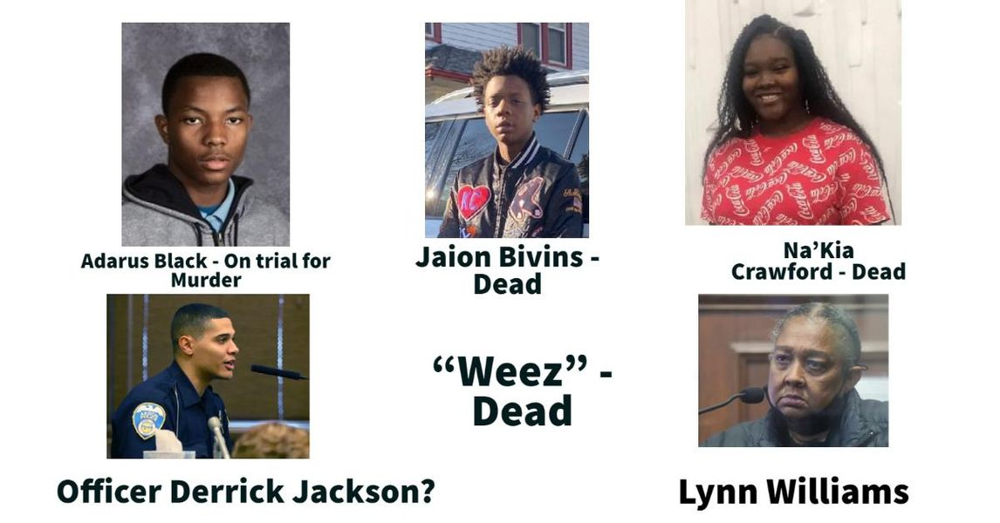

Timeline photos
These are the people most closely involved in the murder of Na’Kia Crawford. (Her murder trial is going on right now.)
Adarus and Jaion were in the car where one of them pulled the trigger and murdered Na'Kia.
Officer Jackson (I think this is him) was the first person on the scene.
Lynn is Na'Kia's grandmother who was in the car when Na'Kia was shot. Na'Kia was running errands for her grandmother.
"Weez" (if you have a picture please send it to me) was the name on Jaion's car. He had put it there in remembrance of his friend who had been murdered.
Jaion has since been murdered in Kentucky.
As a defense mechanism I can hear some of you saying, "Good! Jaion and "Weez" got what they deserved. And Adarus needs to spend the rest of his life in prison."
And some others of you will say, "Jackson knew what he was signing up for when he became a police officer."
HAVE YOU EVER SEEN A DEAD PERSON?
I have. I once saw 2 of my friends pull an unknown man out of a tent who was overdosing. He was clinically dead. But they saved him.
I found my mother when she died in the apartment below me. The cold early morning October sun glared on her gaping mouth. She looked like she was screaming in horror.
That's nothing.
Homeless people find their friends overdosed, murdered and suicided continually.
The number of dead people Officer Jackson has now seen in his career (he started around 2015) has got to be in the dozens, if not hundreds.
The people in this picture are surrounded by death and tragedy.
These are your family members. This is your Akron Street Family. You may not know what a Street Family is, if you aren't living on the street. But it is as strong a bond as any form of DNA.
If you live in Akron, these people are your family. You can't escape it.
And as their family, if you have the mental and emotional space to do so, you can't just brush off their tragedy. It solves nothing.
When we only look at the aftermath we solve nothing. Prison and murder is not a deterrent for people who have nothing else to look forward to other than prison and murder.
We are a family with a large portion of family members who know nothing other than hopelessness and tragedy.
Basketball courts and parks do not solve hopelessness.
Meaning and purpose solve hopelessness. It could be a job. But it also could be art or music or social engagement.
Tragedy is what I call the Terrible Gift. There are always deep lessons to be learned from tragedy, if we choose to listen to the lessons.
Vengeance does not solve this problem. Love and compassion and understanding and GETTING INVOLVED solves this problem.